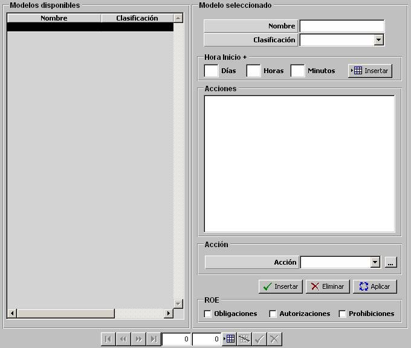

Programación

Mediante esta tabla el operador podrá definir las distintas Programaciones de Acciones que podrán ser asignadas a unidades (ver Preparación de Ejercicios – Unidades). Al asignarle a una unidad una Programación de Acciones, la unidad ejecutará automáticamente la secuencia lógica de acciones definida en la programación.
La Programación de Acciones se define mediante un árbol de acciones. Cada una de las ramas se inicia mediante un nodo, en el que se define la hora de inicio de la programación. A cada nodo se le pueden asociar una o más acciones, y a cada una de las acciones, se le puede asociar a su vez una o varias acciones, componiéndose así un árbol de acciones. Para una misma programación, se pueden definir distintos nodos, teniendo así distintas ramas.
Por ejemplo:

Para introducir un nuevo modo, el operador debe especificar la hora de inicio, y pulsar validar. Para introducir nuevas acciones, debe seleccionar la acción de la que cuelga, seleccionar la acción que se desea añadir, y pulsar Insertar. Los nodos y acciones pueden ser eliminados. Si el nodo o acción eliminado tenía acciones asociadas, éstas también son eliminadas.
En la hora especificada para cada nodo, se iniciará la secuencia de Acciones especificada en la rama de dicho nodo. La secuencia se realizará de forma que se ejecutan las acciones de un nivel, y cuando se consigue ejecutar, se continúa con las Acciones del siguiente nivel asociadas a dicha Acción. Por tanto, las Acciones que se encuentran a un mismo nivel se ejecutarán con condición OR, y las de niveles sucesivos con condición AND, y en secuencia.
En el ejemplo anterior, las secuencias de acciones definidas para cada nodo consisten en:
- Primer nodo: Comenzar a las 1H 15M. Ejecutar Acción 1, Acción 2 o Acción 3. Cuando se consiga ejecutar cualquiera de ella, se finaliza la secuencia.
- Segundo nodo: Comenzar a las 2H 00M. Ejecutar Acción 1; una vez que se consiga ejecutar la Acción 1, ejecutar la Acción 2; y una vez que se consiga ejecutar la Acción 2, ejecutar la Acción 3.
- Tercer nodo: Comenzar a las 3H 30M. Ejecutar Acción 1 o Acción 2. Si se consigue ejecutar la Acción 1, finaliza la secuencia, y si se consigue ejecutar la Acción 2, ejecutar la Acción 3 o la Acción 4. En el momento en el que se consiga ejecutar la Acción 3 o la Acción 4, finaliza la secuencia.
Una descripción más detallada del funcionamiento de la Programación de Acciones se incluye en el apartado Modelística – Programación de Acciones.